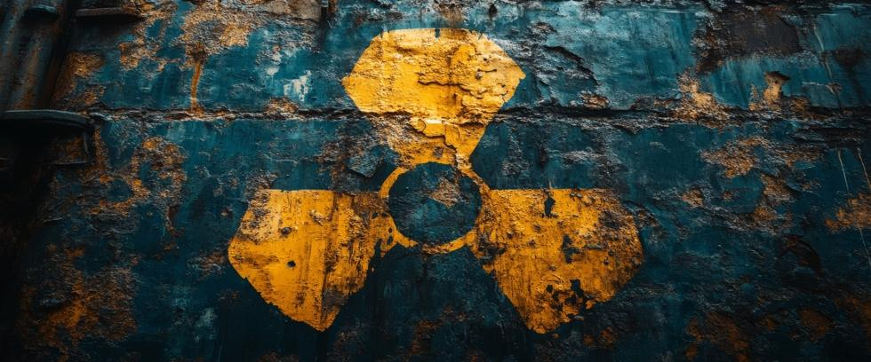

The risks posed by nuclear weapons can seem overwhelming. Complex international politics, advanced technologies, and historical animosities often make it feel like world events are beyond the influence of ordinary people. Yet history shows that public activism and pressure have played critical roles in reducing nuclear dangers in the past—and can again today.
Even when global challenges seem set in stone, there are meaningful actions individuals can take to build a safer future. Understanding what you can do is the first step toward making a difference.
Educate Yourself and Others
The first and most powerful tool is knowledge. Issues involving nuclear weapons are often misunderstood or neglected in public conversation, despite their enormous impact on global security. By learning about topics such as arms control treaties, nuclear deterrence strategies, and historical near-misses, you gain the ability to think critically and share accurate information with others.
You do not need to become an expert. Reading books and listening to podcasts, attending webinars, and following relevant research can arm you with a clear understanding of the risks and the options involved. The more people who understand the realities of nuclear threats, the stronger will be social demands for appropriate action.
Simply talking with friends, classmates, or coworkers helps break the silence that often surrounds nuclear weapons issues.
Support Organizations Working for Nuclear Disarmament
Numerous organizations around the world work every day to reduce nuclear risks. They research nuclear protocols, advocate for arms control treaties, educate the public, and work toward nuclear disarmament. Supporting those groups through donations, volunteer activities, or simply mentioning their work on social media strengthens their ability to make an impact.
Groups such as the International Campaign to Abolish Nuclear Weapons (ICAN), the Nuclear Threat Initiative (NTI), the Arms Control Association, and Our Planet Project Foundation represent a wide range of efforts that employ different approaches toward nuclear risk reduction.
Even small actions, such as attending a local event, signing a petition, or sharing an educational article, contribute to nuclear threat reduction in meaningful ways.
Engage with Elected Representatives
One of the most direct ways to influence nuclear policy is through civic engagement. Elected officials pay attention to their constituents when their concerns are voiced respectfully with factual information.
Contacting your representatives, attending town hall meetings, or submitting op-eds to local newspapers can help put nuclear issues back on the political agenda. Ask your representatives about their stance on ending arms control treaties, the modernization of nuclear arsenals, or efforts to achieve nuclear disarmament.
Support leaders who prioritize nuclear risk reduction and hold them accountable for their positions. In democracies, public pressure has historically driven major policy shifts. For example, citizen activism during the Cold War helped pressure governments to sign arms control treaties and halt nuclear testing.
Advocate for New Arms Control Measures
The collapse of major arms control agreements in recent years highlights the urgent need for renewed activism. Efforts can focus on supporting actions such as:
- Extending existing treaties like New START, which is due to expire in 2026.
- Negotiating new agreements to limit the development and deployment of emerging technologies such as hypersonic missiles and autonomous weapons.
- Establishing clear and transparent "no first use" policies among nuclear-armed nations.
- Contributing to organizations working toward nuclear disarmament.
Raising awareness about possible solutions, instead of just talking about obvious risks, encourages people to support efforts to reduce nuclear threats. Building political support for those measures encourages a framework that prioritizes dialogue leading to arms reductions and the eventual elimination of nuclear weapons entirely.
Why You Matter
It is easy to feel powerless when facing the reality of nuclear war. If regular people cannot end hostilities between the left and the right, or shrink divides between the rich and the poor, how can we hope to influence policies about nuclear weapons? But regular people have always driven policy change. Political or military leaders are important, but they cannot oppose public opinion forever.
From atmospheric nuclear testing to nuclear arms control agreements, grassroots efforts to put pressure on governments have succeeded when ordinary people refused to accept the status quo.
Today, the world stands at another crossroads. Without public pressure, governments may continue their drift toward accelerating arms races and weakening nuclear treaties. But an informed and persistent public can force leaders to prioritize restraint and security instead of increasing their ability to wage war.
At Our Planet Project Foundation, our approach toward nuclear disarmament is radically different from previous efforts to eliminate nukes. We encourage everyone to learn more by visiting OurPlanetProject.com. Nuclear security is not a given. It must be secured through deliberate effort where every action counts—especially yours.